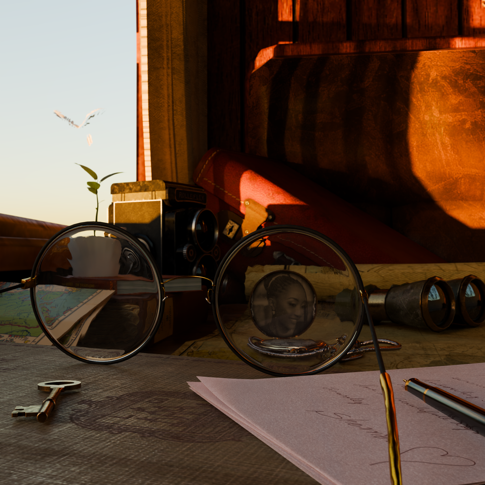
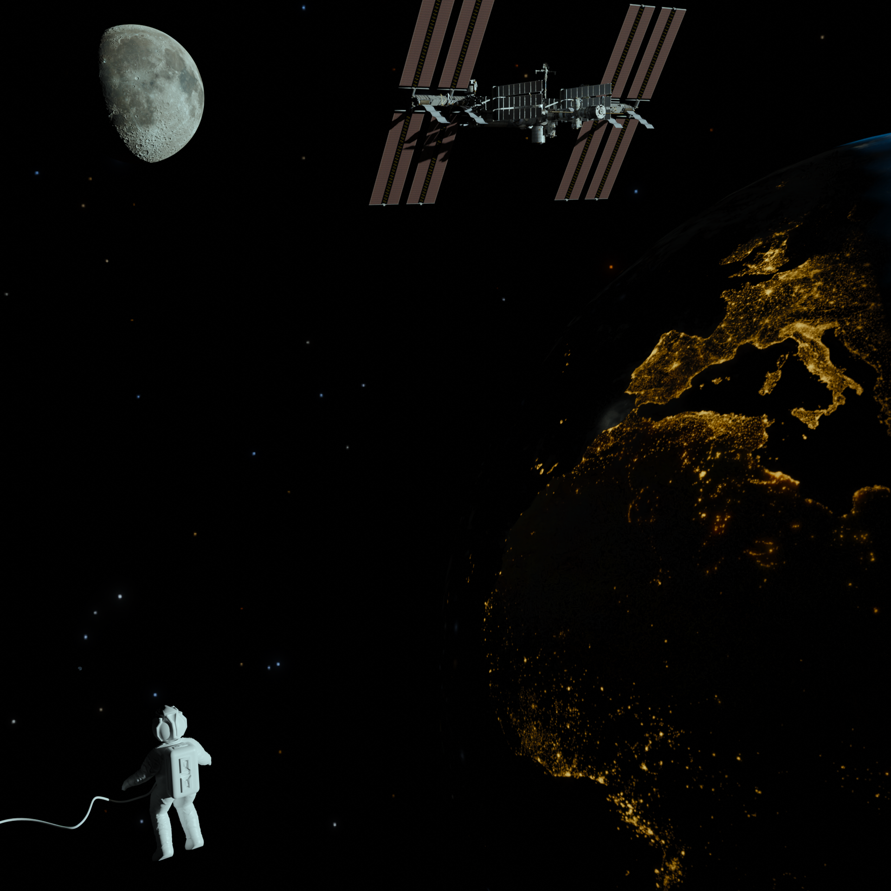
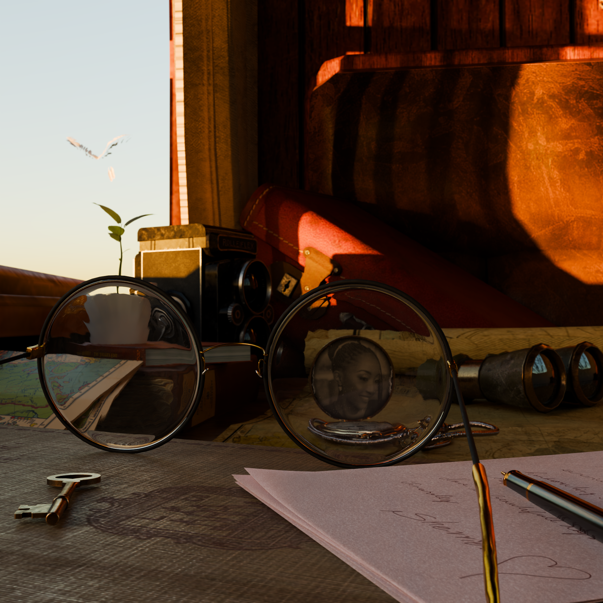
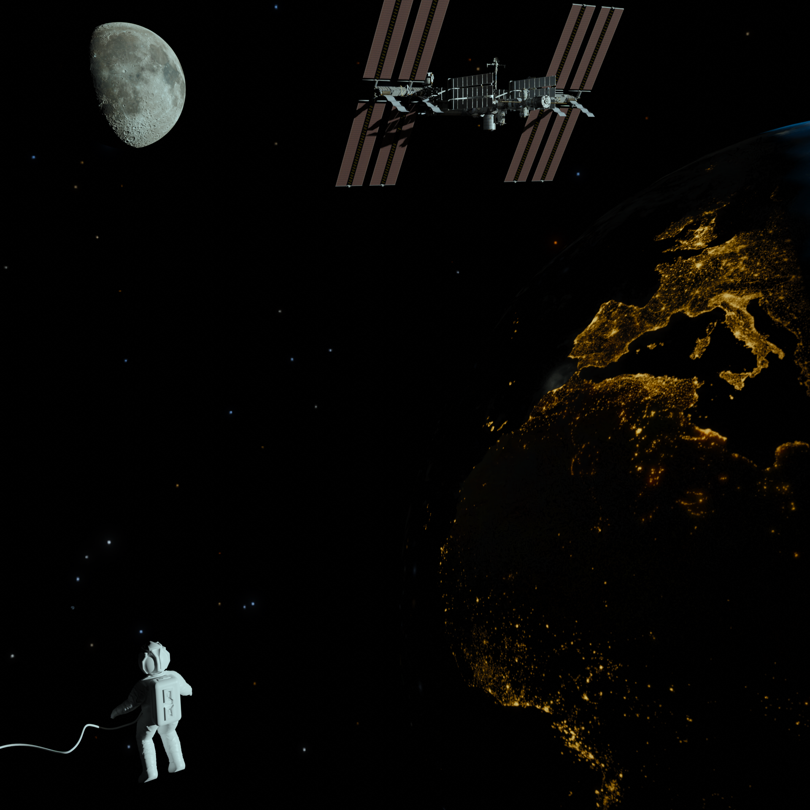

Our Projects
Shaddy Motors
The render of the BMW M3 vehicle, created to promote Shaddy Motors, showcases a striking blend of elegance and performance, perfectly encapsulating the spirit of the brand. Set against a dynamic urban backdrop, the M3 is positioned to highlight its aggressive stance and sleek lines, drawing the viewer's eye to its aerodynamic contours and iconic kidney grille. The attention to detail is impeccable, from the glimmer of the polished alloy wheels to the subtle reflections on the car's glossy finish. Utilizing Blender’s powerful rendering capabilities, the scene is infused with a lifelike quality that brings the vehicle to life, making it the centerpiece of the composition. Lighting plays a crucial role in this render, enhancing the BMW M3's features and creating an atmosphere that resonates with automotive enthusiasts. The strategic use of natural light casts dramatic shadows and highlights, emphasizing the car's muscular curves and performance-ready design. The environment around the vehicle is crafted to reflect the brand's identity—modern, edgy, and vibrant. This meticulous attention to both the vehicle and its setting not only promotes Shaddy Motors effectively but also captures the essence of luxury and sportiness, inviting viewers to imagine themselves behind the wheel of this iconic machine.
Suave
Suave men’s skin product line offers a comprehensive solution for modern grooming, featuring an array of versatile packaging designed for convenience and precision. The collection includes a sleek plastic closure that keeps the product secure and easily accessible, perfect for on-the-go use. A dropper provides targeted application, ideal for serums or concentrated treatments, ensuring that every drop counts. Additionally, the two tube designs cater to both travel-friendly portability and easy dispensing, allowing for a mess-free experience when applying lotions or creams. The pump dispenser is perfect for moisturizers, delivering the right amount with a simple press, while the spray option offers a refreshing mist, perfect for quick hydration or post-shave soothing. The Suave product line is not just about practicality; it emphasizes quality and effectiveness in skincare. Each formulation is crafted to address the unique needs of men’s skin, whether it’s hydration, anti-aging, or revitalization. The sleek designs of the packaging reflect a modern aesthetic, making it a stylish addition to any grooming routine. From the shower to the vanity, Suave ensures that every aspect of men’s skincare is covered, providing reliable solutions that fit seamlessly into a busy lifestyle.
Aesthetics
The "Aesthetics" project is a groundbreaking exploration of visual storytelling through the lens of advanced camera angles, dynamic lighting, and diverse scene renderings, all powered by NVIDIA's cutting-edge GPU technology. This project delves into the art of cinematography, utilizing an array of innovative camera techniques to create immersive narratives. From sweeping wide shots that capture breathtaking landscapes to intimate close-ups that highlight emotional nuances, each angle is meticulously crafted to enhance the viewer's experience. The use of NVIDIA GPUs enables real-time rendering, allowing for intricate details and fluid motion that elevate the overall visual quality, making every frame a work of art. Lighting plays a pivotal role in the "Aesthetics" project, transforming ordinary scenes into captivating visual experiences. The project employs various lighting setups, including dramatic contrasts and soft diffusions, to evoke different moods and atmospheres. Whether it's the warm glow of a sunset illuminating a tranquil setting or the stark shadows of a high-contrast scene, each lighting choice is intentional and purposeful. By rendering multiple scenes with NVIDIA's powerful technology, the project showcases a spectrum of artistic possibilities, inviting audiences to appreciate the nuanced interplay of light and shadow. "Aesthetics" ultimately celebrates the synergy between technology and creativity, pushing the boundaries of visual art in the digital age..
 


